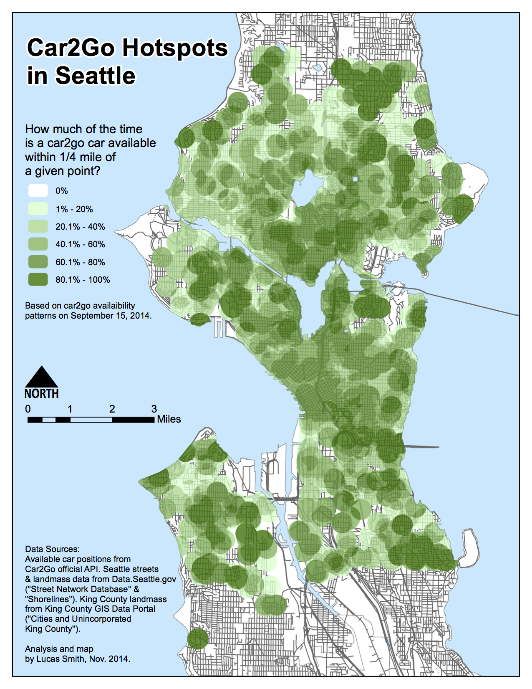
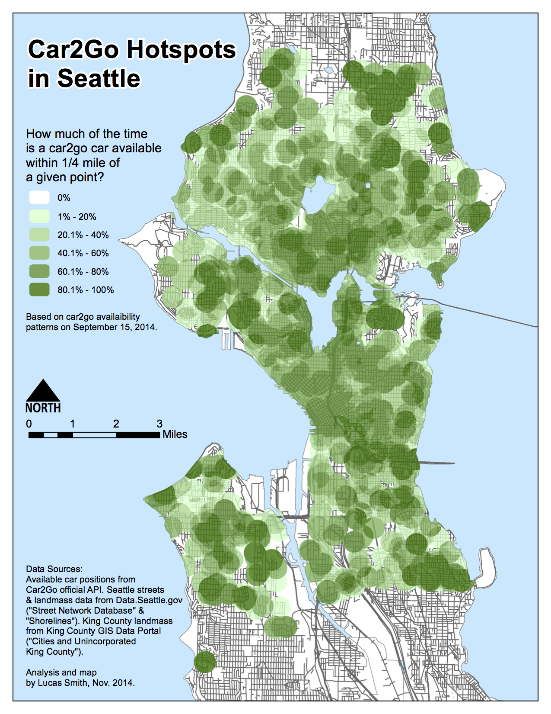

Map
Based on data of positions of available car2go vehicles in the Seattle area. The colors indicate the percentage of the time a car2go car was available in the colored area.
Click to view full-sized PDF.
Based on data of positions of available car2go vehicles in the Seattle area. The colors indicate the percentage of the time a car2go car was available in the colored area.
Click to view full-sized PDF.